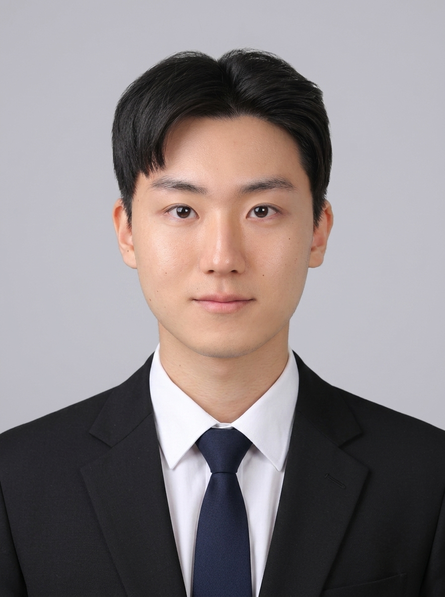
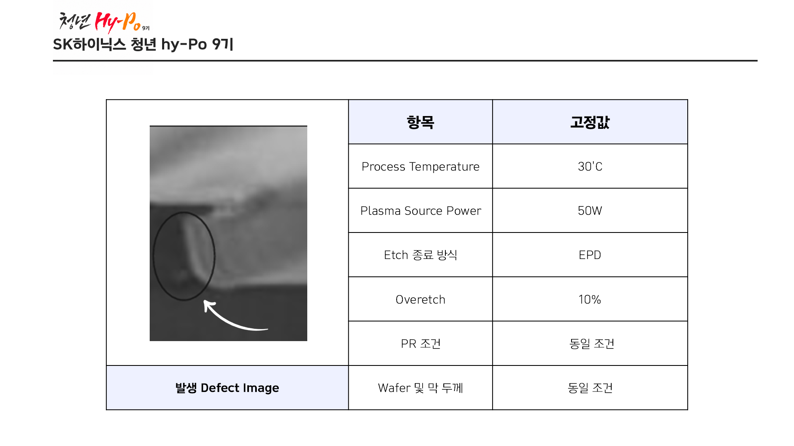
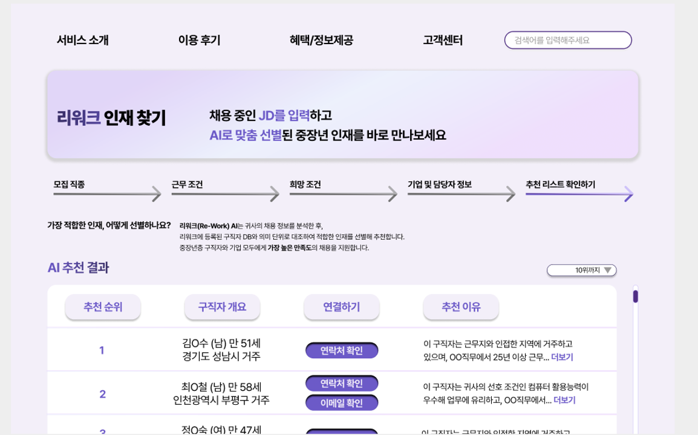
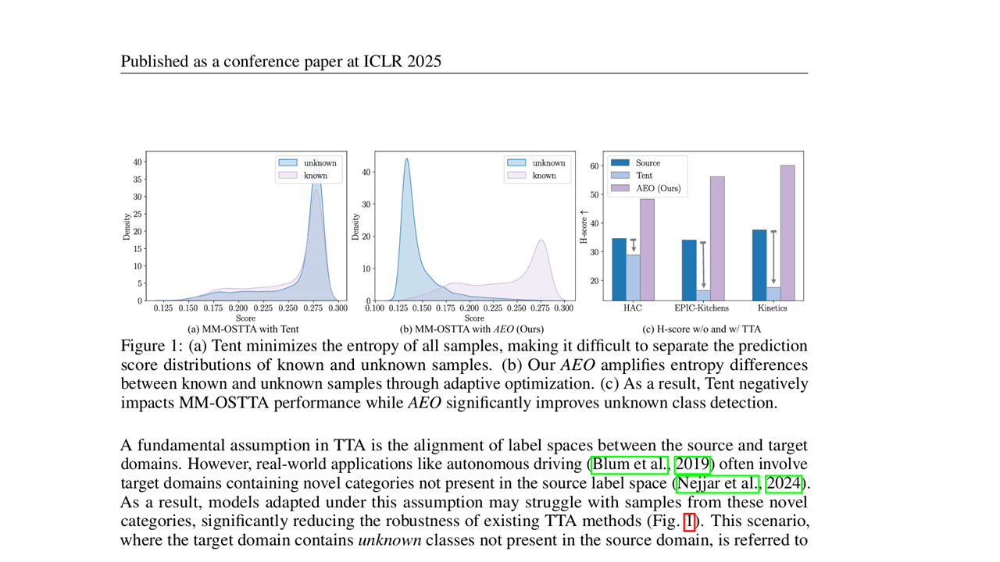
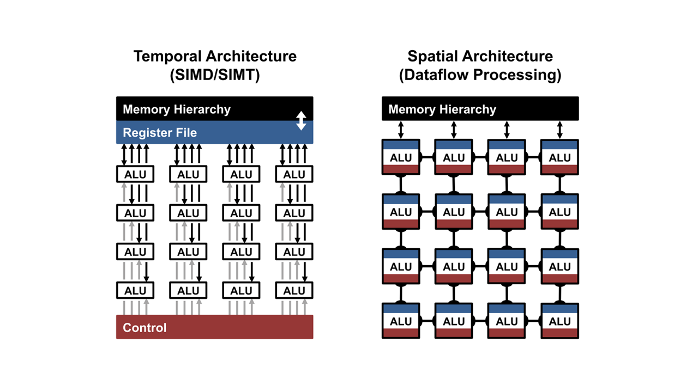

Language
HYUNWOO KIM
데이터와 AI를 실제 서비스의 가치로 연결하는
AI Engineer 김현우를 소개합니다.
AI Engineer 김현우를 소개합니다.
ABOUT ME

이름
김현우
학력
성균관대학교
· 인공지능융합전공
· 전자전기공학부
· 인공지능융합전공
· 전자전기공학부
연락처
010-9174-1609
이메일
hyunwoo558@gmail.com
SKILLS
Electrical and Electronic
Data
Research
AI
Certification
AWARDS
기상청
2025 날씨 빅데이터 콘테스트
최우수상 · 환경부장관상
제공된 기상자료와 직접 수집한 공공데이터를 활용한
지역별 119 신고 건수 예측 프로젝트로 수상했습니다.
지역별 119 신고 건수 예측 프로젝트로 수상했습니다.
학부
PBL 교과목 프로젝트 공모전
은상
KBO 선수와 경기 기록 데이터로 데이터베이스를 구축하고
선수 연봉 예측 애플리케이션을 개발하여 수상했습니다.
선수 연봉 예측 애플리케이션을 개발하여 수상했습니다.
PROJECTS
Etching Defect 공정 최적화
2026 · SK하이닉스 청년 hy-Po 9기 Project

우측 하단 버튼을 클릭하면 관련 자료를 확인하거나 다운로드할 수 있습니다.
데이터 분석 기반 Etching 공정의 Undercut과 Sidewall Profile 개선 프로젝트
- Undercut과 Tapered 현상의 원인을 분석하고 세 가지 주요 공정 인자 선정
- 3인자 3수준 DOE를 설계하고 27개 조건을 2회 반복하여 총 54 Run의 공정 데이터 분석
- ANOVA를 통해 주요 인자와 교호작용의 유의성을 검증하고 회귀모형을 활용해 최적 조건 도출
- Undercut과 Sidewall Angle를 개선하는 최적 조건을 찾고 향후 관리방안을 모색
반도체
Etching
DOE
Statistics
Optimization
RAG 기반 헤드헌팅 서비스
2025 · Capstone Project

우측 하단 버튼을 클릭하면 관련 자료를 확인하거나 다운로드할 수 있습니다.
RAG 기반 검색 · 생성 구조를 활용한 중장년층 재취업 헤드헌팅 서비스
- 고령화연구패널(KLoSA)를 활용하여 직무만족도 예측에 유의한 32개의 핵심 변수 정리
- 핵심 변수로 구성된 구직자 데이터셋과 직무기술서(JD)을 기반으로 한 추천 로직 설계
- LangChain 기반 RAG와 Re-Ranking을 적용하여 직무 적합도가 높은 인재를 추천
- 후보자 추천 결과와 추천 근거를 함께 제시하도록 프롬프트 설계 및 프로토타입 구현
AI
LLM
RAG
통계학
추천시스템
TTA 기반 멀티모달 AI 강건성 연구
2024–2025 · Undergraduate Research

우측 하단 버튼을 클릭하면 관련 자료를 확인하거나 다운로드할 수 있습니다.
강건하게 성능을 유지하기 위한 멀티모달 AI의 Test-Time Adaptation 연구
- READ의 Reliability Bias을 검증하기 위해 영상·음성 모달리티에 비대칭 복합 손상 조건을 설계
- 손상 수준에 따른 분류 성능과 Attention 변화를 비교하여 신뢰도가 낮아진 모달리티를 분석
- 모달리티 불일치 관련 파라미터를 조정하며 known 분류와 unknown 탐지 간 Trade-off 검증
- 환경 변화에 대한 강건성과 일반화 성능을 중심으로 반복 실험 및 결과 분석
AI
Multimodal
TTA
Robustness
Research
FPGA 기반 CNN 가속기 설계
2025 · 전자전기 논리회로설계 Project

우측 하단 버튼을 클릭하면 관련 자료를 확인하거나 다운로드할 수 있습니다.
Systolic Array와 Weight-Stationary 구조를 활용한 CNN 연산 가속기 설계
- Verilog HDL로 CNN 연산을 위한 Systolic Array 기반 하드웨어 가속기 구조 설계
- Controller · Memory · Systolic Array · Display 등의 모듈을 설계하고 Top Module로 연결
- 모든 테스트케이스를 자동으로 검증하는 Testbench를 제작하여 오류 발생 모듈을 빠르게 특정
- ModelSim 시뮬레이션과 Vivado 기반 FPGA 구현을 통해 모듈별 동작 검증
전자전기공학
VHDL
FPGA
CNN
Accelerator
TFT-LGBM 하이브리드 모델을 설계하여 2025 기상청 공모전에서 수상
- 부산광역시의 여름철 동별 · 일별 119 신고 건수를 예측하고 원인을 분석하는 기상청 공모전
- 기상자료 API와 직접 수집한 공공데이터를 결합하여 지역·시간 단위 데이터셋 구축
- Temporal Fusion Transformer를 활용하여 시공간 상호작용과 변수 중요도를 동시에 반영
- LightGBM 기반 잔차 보정과 오차 구간 분석을 통해 예측 성능 및 결과 해석 보완
- 예측 성능과 분석의 타당성을 인정받아 최우수상 (환경부장관상) 수상
Data
AI
Data Engineering
ML/DL
Hybrid
Award
Face Anti-Spoofing 앙상블 설계
2026 · 전자전기 종합설계 Project
우측 하단 버튼을 클릭하면 관련 자료를 확인하거나 다운로드할 수 있습니다.
피부 특성과 고주파 residual을 결합한 Face Anti-Spoofing 앙상블 모델 설계
- RGB · Specular-SSS · Pseudo-DIRE 입력별 MobileNetV3-Small 모델 성능 비교
- 피부의 반사·산란 특성과 고주파 residual 특징을 각각 추출하여 모델 입력으로 구성
- Specular-SSS와 Pseudo-DIRE 모델의 예측 확률을 5:5로 결합한 Ensemble 구조 설계
- Cross-Domain 검증과 Ablation Study를 통해 shortcut feature 가능성과 일반화 한계를 확인
AI
전자전기공학
Computer Vision
Ensemble
Generalization
정치적 편향 완화 LLM 구축
2025 · 통계분석학회 P-SAT NLP Project
우측 하단 버튼을 클릭하면 관련 자료를 확인하거나 다운로드할 수 있습니다.
국회회의록과 뉴스 기사를 활용하여 정치적 편향을 측정하고 이를 완화하는 LLM 구축
- 정파적 미디어에 대한 노출이 정치적 양극화에 영향을 미친다는 선행 연구를 확장한 프로젝트
- 국회회의록을 활용하여 뉴스 기사 속 진보/보수 성향을 정량화한 지수를 설계
- MANOVA 검정을 통해 진보/보수 간 차이를 확인하여 정치 편향 지수의 타당성을 확보
- 빈도와 의미를 동시에 고려한 최적의 지수를 산출하고, '뉴스 기사-정치 편향 지수' 데이터셋 생성
- GPT-3.5 Turbo를 Fine-tuning하여 정치적 편향이 완화된 뉴스 기사를 생성하는 모델을 구축
AI
NLP
LLM
통계학
GPT
머신러닝을 활용하여 장애인 가구의 지급불능 상태를 예측한 융합연구 프로젝트
- 선행연구를 바탕으로 DSR · DTA · DTI · 비상자금의 네 가지 지급불능 기준 정의
- 장애인고용패널조사(PSED) 데이터셋을 분석 목적에 맞게 정제하고 활용 변수 선택
- 장애인고용패널조사(PSED) 데이터셋을 분석 목적에 맞게 정제하고 활용 변수 선택
- 다양한 머신러닝 모델을 비교하여 지급불능 상태 예측 성능과 주요 영향 요인 분석
Data
ML
통계학
소비자학
Research
KBO 데이터베이스 구축과 연봉 예측을 하나로 연결한 애플리케이션 개발
- KBO 선수 및 경기 데이터를 수집하고 정제하여 관계형 데이터베이스 구축
- 데이터 활용 목적에 맞게 테이블 구조와 관계를 설계하고 MySQL 기반 스키마 구현
- 포지션과 성적 데이터를 활용한 연봉 예측 모델을 구축하고 예측 결과를 검증
- 기록 조회 · 연봉 예측 · 마이페이지 기능을 애플리케이션으로 구현
- PBL 교과목 프로젝트 공모전 은상 수상
Data
Database
ML
Application
Award